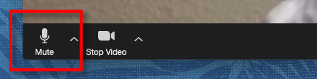
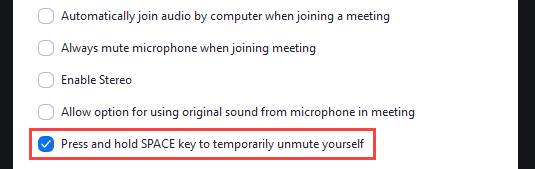

Mute or Unmute on Zoom Video Calls
Unmute on Zoom Meetings Calls

Click or tap the microphone icon. You'll see this in the bottom left corner of your screen—if you don't see it, click or tap the screen to bring up the icon row. When the icon is red and has a line through it, your microphone is muted.
Mute Joining Calls Automatically

Open Zoom on your computer, phone, or tablet. If you want your microphone to be muted when you join meetings, you can do that by making a quick change in your settings. Open your Settings. If you're on a computer, click the gear icon near the top-right corner of Zoom. On a phone or tablet, tap the Settings icon at the bottom of the screen. Click the Audio (PC/Mac) or Meetings (phone/tablet) menu. Settings for your microphone and other options will appear.
Select the option to mute your microphone. If you're using a computer, check the box next to "Mute my microphone when joining a meeting." On a phone or tablet, toggle on the "Always mute my microphone" switch.